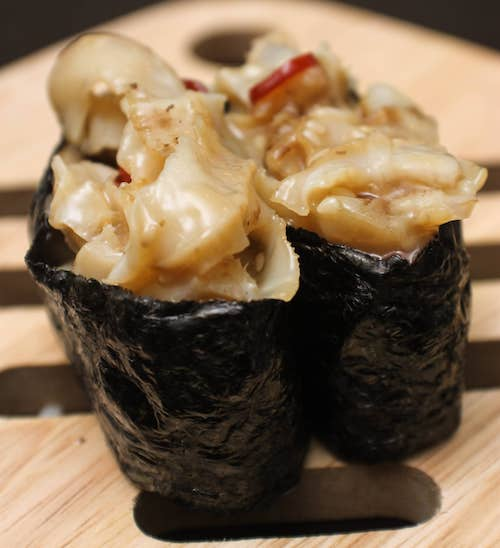
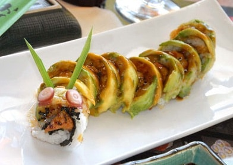

<head><meta charset="utf-8"/><meta name="viewport" content="width=device-width, initial-scale=1"/><title>Sushi Guide</title><meta name="description" content="Beginner's quick guide to understanding and enjoying sushi"/><link rel="stylesheet" href="style.css"/></head><body><div id="heading"><p id="tagline">Beginner's quick guide</p><h1 id="page-title">Sushi</h1></div><p id="instructions">You just arrived for the first time at a sushi restaurant and the menu has no pictures! Learn the different types of sushi and fish, how to eat them and what they pair with.</p><section id="sushi-types"><h2>Types of Sushi</h2><div class="items"><article class="item"><p class="caption">Nigiri</p><p class="description">a slice of raw fish atop a small mound of rice and with a little <i>wasabi</i> between them.</p><p class="extra-info">Eaten with hands, fish side down on tongue first.</p><p class="extra-info">Flip on its side, gently dip fish edge in soy sauce (not rice), don't shake it. Not with wasabi.</p></article><article class="item"><p class="caption">Maki</p><p class="description">strips of fish laid in rice and rolled inside <i>nori</i> in a long cylinder, then cut in small pieces</p><p class="extra-info">Futomaki: thick rolls, Hosomaki: thin rolls</p><p class="extra-info">Traditionally eaten with hands: thumb and middle finger.</p></article><article class="item"><p class="caption">Uramaki</p><p class="description">inside-out roll: fish in the center wrapped in <i>nori</i> and rice on the outside</p></article><article class="item"><p class="caption">Sashimi</p><p class="description">raw slices of fish (not considered sushi).</p><p class="extra-info">Eaten with chopsticks. Can mix soy sauce & wasabi</p></article></div></section><section id="condiments"><h2>Sushi Condiments</h2><div class="items"><article class="item"><p class="caption">Shoyu</p><p class="description">soy sauce, salty.</p><p class="extra-info">Pour a very small amount.</p></article><article class="item"><p class="caption">Wasabi</p><p class="extra-info">extremely hot. Recover from too much by breathing through the nose.</p><p class="extra-info">Not to be mixed with soy sauce.</p></article><article class="item"><p class="caption">Gari</p><p class="description">pickled ginger.</p><p class="extra-info">Eat a single slice between kinds of sushi to cleanse palette.</p></article></div></section><section id="fish-kinds"><h2>Kinds of Fish</h2><div class="items"><article class="item"><p class="caption">Sake</p><p class="description">salmon</p></article><article class="item"><p class="caption">Maguro</p><p class="description">tuna</p><p class="extra-info">Escolar: white tuna, Toro: fat tuna</p></article><article class="item"><p class="caption">Hamachi</p><p class="description">yellowtail</p></article><article class="item"><p class="caption">Saba</p><p class="description">mackerel (macrou)</p></article><article class="item"><p class="caption">Tai</p><p class="description">red snapper</p></article><article class="item"><p class="caption">Kani</p><p class="description">cooked crab (can be artificial)</p></article><article class="item"><p class="caption">Ebi</p><p class="description">cooked shrimp</p></article><article class="item"><p class="caption">Ika</p><p class="description">squid (calamar)</p></article><article class="item"><p class="caption">Tako</p><p class="description">octopus</p></article><article class="item"><p class="caption">Uni</p><p class="description">sea urchin (arici de mare)</p></article><article class="item"><p class="caption">Kazunoko</p><p class="description">herring roe (icre)</p></article><article class="item"><p class="caption">Unagi/Anago</p><p class="description">eel</p></article><article class="item"><p class="caption">Hotate</p><p class="description">scallop (socica)</p></article></div></section><section id="roll-types"><h2>Types of Rolls</h2><div class="items"><article class="item"><p class="caption">Spicy Tuna</p><p class="description">tuna, mayo, chilli</p></article><article class="item"><p class="caption">Spider roll</p><p class="description">crab, cucumber, sprouts</p></article><article class="item"><p class="caption">Philadelphia</p><p class="description">salmon, avocado, asparagus, cream cheese</p></article><article class="item"><p class="caption">California</p><p class="description">crab, avocado, cucumber, sesame seeds</p><p class="extra-info">Rainbow: assortment of fish on top of California</p></article><article class="item"><p class="caption">Crunch</p><p class="description">spicy tuna, crispy seaweed, deep fried vegetables</p></article><article class="item"><p class="caption">Caterpillar</p><p class="description">eel, cucumber, egg, avocado</p></article><article class="item"><p class="caption">Tiger</p><p class="description">avocado, shrimp, tempura, cucumber</p></article><article class="item"><p class="caption">Dragon</p><p class="description">eel, crab, cucumber inside, avocado outside</p></article><article class="item"><p class="caption">Dynamite</p><p class="description">shrimp, yellowtail, carrots, avocado, cucumber, bean sprouts, chili, spicy mayo</p></article><article class="item"><p class="caption">Surf and Turf</p><p class="description">beef, crab, tuna, salmon, carrot, avocado</p></article></div></section><section id="drinks"><h2>Pairing Drinks</h2><div class="items"><article class="item"><p class="caption">White Wine</p><p class="description">Dry Champagne goes with anything. Other good choices are Dry Rose/Riesling and Green Wine.</p></article><article class="item"><p class="caption">Japanese Beer</p><p class="description">crisp and dry.</p></article><article class="item"><p class="caption">Sake</p><p class="description">fermented rice, best with <i>sashimi</i>, not sushi.</p><p class="extra-info">Can be drank before.</p></article><article class="item"><p class="caption">Green Tea</p><p class="description">can act as a palette cleanser</p></article></div></section><section id="other-food"><h2>Other Food Items</h2><div class="items"><article class="item"><p class="caption">Nori</p><p class="description">seaweed</p></article><article class="item"><p class="caption">Sushi rice</p><p class="description">white, long rice with vinegar water and salt</p></article><article class="item"><p class="caption">Temaki</p><p class="description"><i>nori</i>, cone of fish, rice and vegetables</p></article><article class="item"><p class="caption">Tempura</p><p class="description">deep fried sea food</p></article><article class="item"><p class="caption">Tamago</p><p class="description">egg, desert</p></article><article class="item"><p class="caption">Inari</p><p class="description">no fish, just rice in <i>tofu</i></p></article><article class="item"><p class="caption">Gunkan</p><p class="description">rice, <i>nori</i>, fish roe (icre)</p></article><article class="item"><p class="caption">Chirashi</p><p class="description">bowl of mixed fish, rice and vegetables</p></article><article class="item"><p class="caption">Miso</p><p class="description">seafood soup, after main course.</p><p class="extra-info">Can be drank directly from the bowl</p></article><article class="item"><p class="caption">Tofu</p><p class="description">cheese made from soy milk</p></article><article class="item"><p class="caption">Onigiri</p><p class="description">ball of rice wrapped in <i>nori</i></p></article><article class="item"><p class="caption">Tobiko</p><p class="description">flying fish roe (icre)</p></article><article class="item"><p class="caption">Daikon</p><p class="description">Japanese radish (served with <i>sashimi</i>)</p></article></div></section><section id="more-info"><h2>More Info</h2><h3>Eating</h3><ul><li>Eat immediately, before it loses flavor</li><li>Eat <i>maki</i> first, before it loses crispiness</li><li>Eat should eaten in one bite, to avoid ruining the structure</li><li>Eat most flavorful last: white fish, silver, red, salmon, fattest; to avoid overpowering lighter fish</li></ul><h3>Chopsticks</h3><ul><li>Use back ends when taking from another plate</li><li>Don't pass food with them, extend your plate instead</li><li>Don't point with them</li><li>Don't rub them together</li><li>Don't stick them vertically in rice</li><li>When resting, place them on the ceramic rest</li></ul><h3>Chef</h3><ul><li><i>Omakase</i> = meal of dishes selected by the chef</li><li>You can sit at the bar to watch preparation (non-sushi items ordered from waiter)</li><li>You can ask about tools; but asking about freshness of ingredients is insulting</li><li>You can complement with <i>Sake</i> or beer but you can't tip</li></ul><h3>Etiquette</h3><ul><li>Don't leave food on the plate, at all</li><li>Be aware when taking photos</li><li>Towels may be provided to wipe hands before eating</li></ul><h3>Related Terms</h3><ul><li><i>itamae</i> = sushi chef</li><li><i>irasshaimase</i> = welcome</li><li><i>toro</i> = fat</li><li><i>sushi</i> initially referred to the rice</li></ul></section><footer>Enjoy your sushi! (<a href="https://github.com/stefan-niculae/sushi">page source</a>)</footer></body>